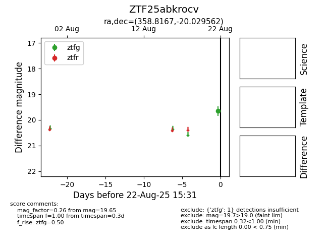

Target ZTF25abkrocv at 2025-08-22 16:16, see:
FINK: fink-portal.org/ZTF25abkrocv
Lasair: lasair-ztf.lsst.ac.uk/objects/ZTF25abkrocv
ALeRCE: alerce.online/object/ZTF25abkrocv
alt names
ZTF25abkrocv (ztf,alerce)
coordinates:
equatorial (ra, dec) = (358.8167,-20.02956)
galactic (l, b) = (58.8481,-75.31769)
photometry
last ztfg=19.65
1 ztfg detections
